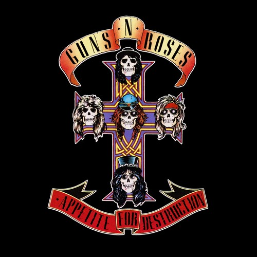

Appetite for Destruction
Appetite for Destruction is the debut studio album by American hard rock band Guns N' Roses. It was released on July 21, 1987, by Geffen Records to massive commercial success. It topped the Billboard 200 and became the best-selling debut album as well as the 11th best-selling album in the United States. With about 30 million copies sold worldwide, it is also one of the best-selling records ever. Although critics were ambivalent toward the album when it was first released, Appetite for Destruction has since received retrospective acclaim and been viewed as one of the greatest albums of all time.